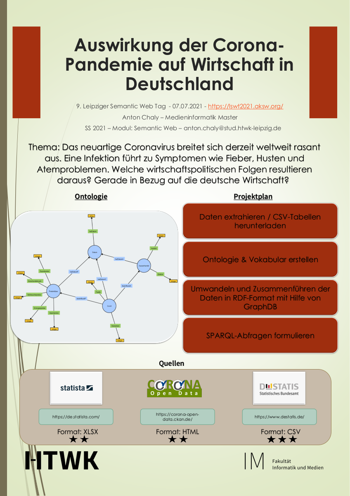

Anton Chaly
Das neuartige Coronavirus breitet sich derzeit weltweit rasant aus. Eine Infektion führt zu Symptomen wie Fieber, Husten und Atemproblemen. Welche wirtschaftspolitischen Folgen resultieren daraus? Grade in Bezug auf die deutsche Wirtschaft?
The novel coronavirus is currently spreading rapidly around the world. Infection leads to symptoms such as fever, cough, and difficulty breathing. What are the economic policy consequences of this? Especially in relation to the German economy?
